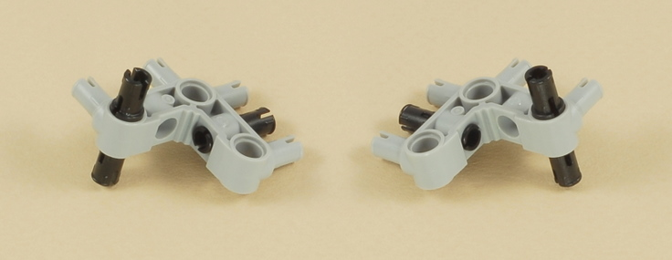
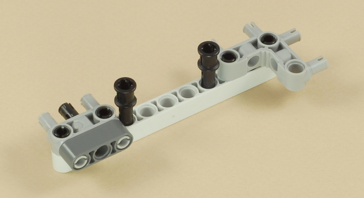
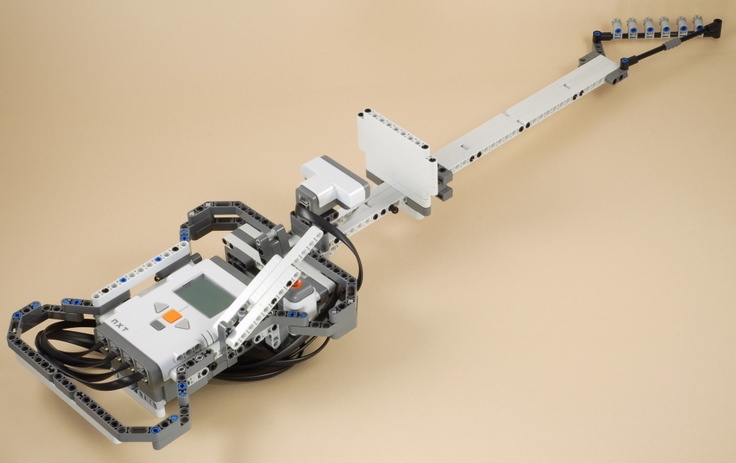

Fun Projects for your LEGO� MINDSTORMS� NXT!
|
|
Fun Projects for your LEGO� MINDSTORMS� NXT! |
| Guitar Challenge Game |
|

1
| Or | ||
| If you have two touch sensors, use both of them. If you have only one touch sensor, use the sound sensor as a second "dummy" touch sensor. Using two touch sensors will allow the guitar's strum lever to trigger on both up and down strokes. Using one touch sensor will make the strum lever trigger only on down strokes. | ||
2
3
4

| Important: If using only one touch sensor, make sure the touch sensor is on the "top" as shown below. |
5
6
7
8
9

10
11
12
13
14
15

16
17
18
19
20
21
| (Optional): You can add two of these pegs to the neck of the guitar to limit the motion of the sliding plate on the lowest (farthest from the sensor) note. You can adjust their position if necessary, as well as the pegs on the other end of the neck, to make the range of notes easier to find. You can also use a different adjustment for Free Play mode (8 positions) vs. Game Mode (5 positions) if you want. |
22

| You can use the NXT with either AA batteries or the rechargeable battery pack. |
23
| Length | Sensor | NXT Port | Note |
| 50 cm (Longest) | Top/only touch sensor | 1 | |
| 35 cm (Medium) | Bottom touch sensor | 2 | You can omit this wire if using only one touch
sensor. The sound sensor will not be used. |
| 35 cm (Medium) | Light sensor | 3 | |
| 50 cm (Longest) | Ultrasonic | 4 |
For each wire, attach it to the sensor as specified above, then carefully route it through or under the guitar body as shown below, then attach it to the correct port on the NXT. |

| This completes the instructions for building the guitar in "Game Mode". To convert to "Free Play" mode, where the NXT brick is installed inside the body of the guitar, see the conversion instructions below. |
|
Programming the
Guitar Challenge Game Project There are several programs for the Guitar Challenge Game project. Overall there are two modes that you can use the guitar in: "Game Mode" and "Free Play" mode. For the programs and information on how to use them, see Using the Guitar Challenge Game Project.
For programs and more information, see Using the Guitar Challenge Game
Project. |
Converting the Guitar to Free Play Mode
| The following instructions show how to convert the guitar from "Game
Mode" to "Free Play" mode. To convert back to Game
Mode after
this, reverse these steps. 1. Remove the stand from the bottom of the NXT. |
| 2. Rotate the NXT so that the wires are routed as shown, and plug it into the frame at the four attachment points as shown below. |
| 3. Push the four bushed pegs into the matching holes on the NXT as shown below. |

| 4. Replace the bottom stand on the other side of the NXT as shown below. |

| For instructions on using the guitar, see
Using the Guitar Challenge Game Project.
|
|
Copyright
�
2007-2009 by Dave Parker. All rights reserved. |